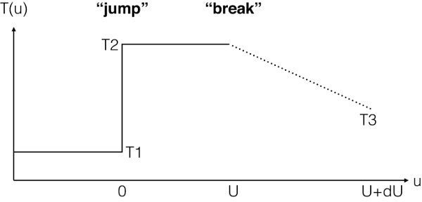

4.1.29. Neij: non-equilibrium ionisation jump model¶
This model calculates the spectrum of a plasma in non-equilibrium ionisation (NEI). For more details about NEI calculations, see Non-equilibrium ionisation (NEI) calculations.
The present model calculates the spectrum of a collisional ionisation
equilibrium (CIE) plasma with uniform electron density
 and temperature
and temperature  , that is
instantaneously heated or cooled to a temperature
, that is
instantaneously heated or cooled to a temperature  . It then
calculates the ionisation state and spectrum after a time .
Obviously, if becomes large the plasma tends to an equilibrium
plasma again at temperature .
. It then
calculates the ionisation state and spectrum after a time .
Obviously, if becomes large the plasma tends to an equilibrium
plasma again at temperature .
The ionisation history can be traced by defining an ionisation parameter,
with defined at the start of the shock.
By default the model describes a classical NEI condition with a flat temperature profile:
For the case the user wands to calculate more complex situations, SPEX offers two modes to treat a temperature profile : analytic expression (mode 1) or ascii-file input (mode 2).
The temperature profile in mode=1 (analytic case) is given by
By setting a non-zero value for , this model offers the opportunity to calculate more complex evolution in the last epoch (); e.g. with secondary heating/cooling process and/or change in density. We introduce parameters and , which describe a power-law like evolution respectively for temperature and density of the plasma after the “break” of constancy at time :
(1)¶
An immediate application of this break feature would be a recombining plasma due to rarefaction (adiabatic expansion). Such a condition can be realised with and . Note that we include the effect of the density change here in the NEI calculation for the ion concentration, but of course the line emission is calculated at the density prescribed by the parameter ed of the model, which represents the true density at the epoch of emission of the spectrum.
{kind=link}

The temperature profile with mode=1.¶
To get the expression for , we first calculate the increase of the ionisation parameter after as follows:
(2)¶
Then, by combining equations (1) and (2), we obtain:
and we get the final temperature at to be
It should be noted that, for fixed values of and
, the temperature change after the break is determined by
the ratio rather than itself. The user can check
with the ascdump plas command (see Ascdump: ascii output of plasma and spectral properties)
and also the histories of and with the
ascdump nei command (see Ascdump: ascii output of plasma and spectral properties).
In some rare cases with a large negative , can get an unphysical value (). In such a case the calculation will automatically be stopped at a lower-limit of keV.
For mode 2, the user may enter an ascii-file with - and
 -values. The format of this file is as follows: the first line
contains the number of data pairs (, ). The next lines
contain the values of (in the SPEX units of
-values. The format of this file is as follows: the first line
contains the number of data pairs (, ). The next lines
contain the values of (in the SPEX units of
 s
s  ) and (in keV). Note that
is a requirement, all
) and (in keV). Note that
is a requirement, all  should be positive, and
the array of -values should be in ascending order. The pairs
(, ) determine the ionisation history, starting from
(the pre-shock temperature), and the final (radiation)
temperature is the temperature of the last bin.
should be positive, and
the array of -values should be in ascending order. The pairs
(, ) determine the ionisation history, starting from
(the pre-shock temperature), and the final (radiation)
temperature is the temperature of the last bin.
The parameters of the model are:
t1 : Temperature
before the sudden change in temperature, in keV. Default: 0.002 keV.t2 : Temperature after the sudden change in
temperature, in keV. Default: 1 keV.u : Ionization parameter before the
“break”, in m s. Default:
.du : Ionization parameter after the “break” in
s. Default value is 0 (no break).alfa : Slope of the curve after the
“break”. Default value is 0 (constant ).beta : Slope of the curve after the
“break”. Default value is 0 (constant  ).
).mode : Mode of the model. Mode=1: analytical case; mode=2:
read from a file. In the latter case, also the parameter
hisu needs to be specified.hisu : Filename with the values. Only used when
mode=2.The following parameters are the same as for the cie-model (Cie: collisional ionisation equilibrium model):
hden : Hydrogen density in it : Ion temperature in keVvrms : RMS Velocity broadening in km/s (see Definition of the micro-turbulent velocity in SPEX)ref : Reference element01...30 : Abundances of H to Znfile : Filename for the nonthermal electron distributionRecommended citation: Kaastra & Jansen (1993).